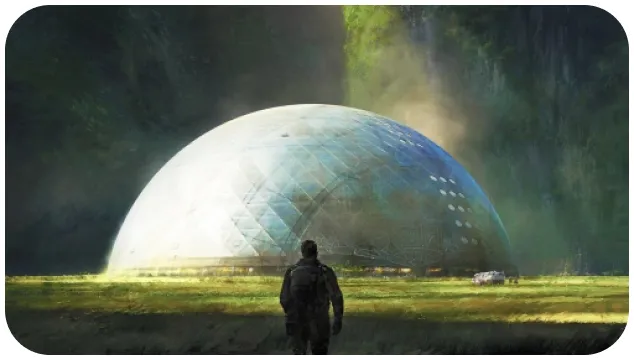
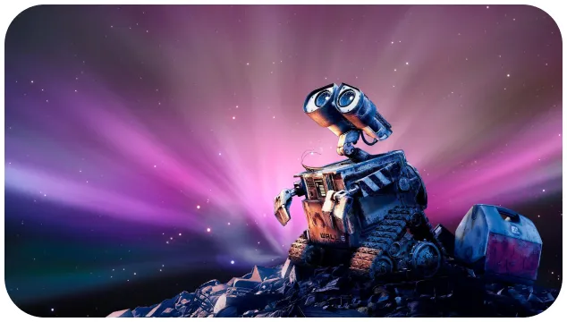

X'plore
Bienvenue
Sommes-nous dans une grande période de découverte ? La réponse est OUI. Aujourd’hui, l’univers est au centre de l’attention. Le monde est fasciné par ces nouvelles innovations, en particulier avec les exploits des fusées SpaceX d’Elon Musk, des sondes envoyées vers la lune ou sur mars et par la très célèbre Station Spatiale Internationale ISS. L’univers est notre désir commun et notre objectif le plus ambitieux. X’plore, vous propose de résumer les enjeux de ces différentes missions spatiales, et de découvrir les possibilités de chaque nouvelle découverte. Vous trouverez aussi notre sélection des meilleurs œuvres de science-fiction mettant le voyage dans l’espace au cœur de leur récit. Rêvez grand, et voyez ce futur encore utopique, comme le monde qui nous attend demain.
nos planètes voisines
ALSO SPRACHT ZARATUSTRA

Wall-E
Et si l’espèce humaine disparaissait…

Comment vivre sur la lune ?

abonnez - vous gratuitement pour découvrir nos nouveaux articles
X'plore
Pour aller plus loin :
Rejoind une communauté de passionné.
#xplore #space #decouverte #technology
Retrouve X’plore sur YouTube et découvre nos meilleurs sujets.
Réagit à toute notre actualité